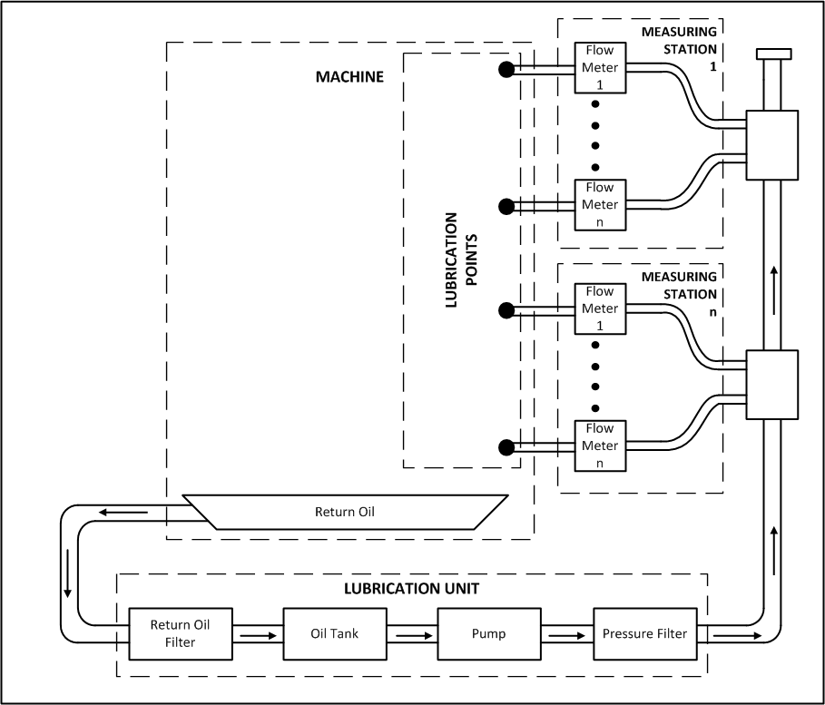
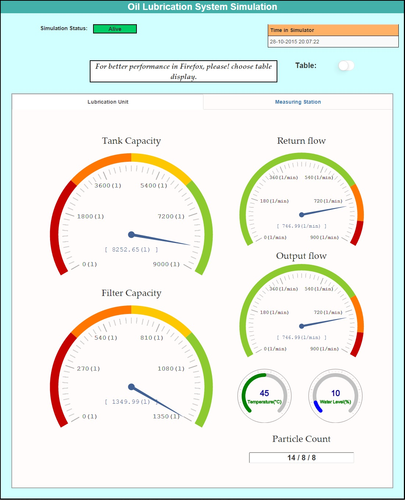
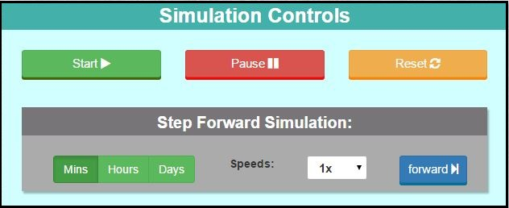
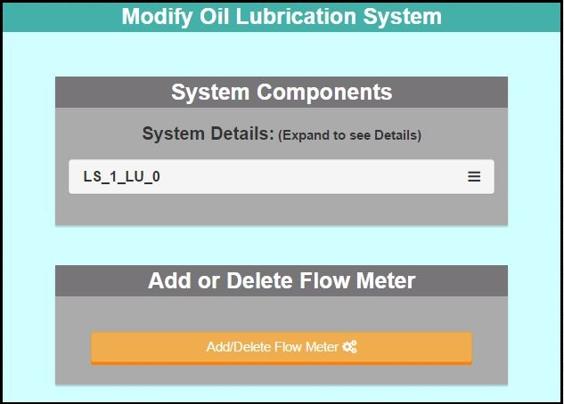
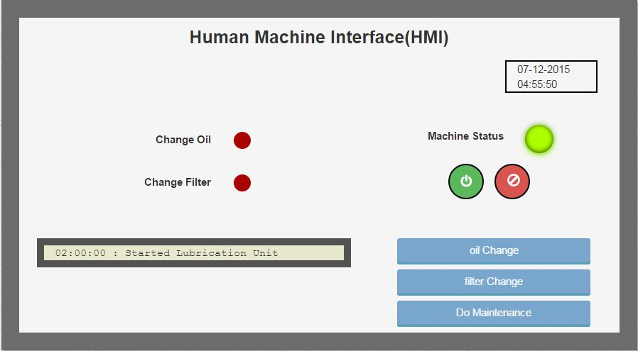

About
Instructions
Contacts
Operator
Monitor
RTUs
ABOUT
Oil Lubrication system simulator is a simulation model based on the Oil circulation lubrication systems used for lubricating machines in industries like paper & pulp industry.
The Simulator was developed as part of eScop project in FAST-Lab. eScop project is funded by ARTEMIS-JU (currently ECSEL JU).
The aim of the project is to provide a flexible Open-Knowledge Driven industrial system which could be applied on any type of manufacturing applications.
Contributors
Tampere University of Technology (FAST-Lab)
Balaji Gopalakrishnan (Developer)
Sergii Iarovyi
Fluidhouse Oy
Otto Karhumäki
Roberto S. Camp
Manu Bose Ambat
Current Version
OLS_Simulator_v2.0
Improvements:
v2.0
- Added HMI Screen.
- Added RTU's for HMI.
- Solved some minor bugs with related to simulation.
-------------------------------------------------------------------------------------------------------------------------------------
LICENSE AGREEMENT
-------------------------------------------------------------------------------------------------------------------------------------
Copyright (c) 2015 Tampere University of Technology All rights reserved.
Permission is hereby granted, without written agreement and without license or royalty fees, to use, copy, modify and distribute this platform and its documentation for any purpose, provided that the copyright notice in its entirety appear in all copies of this platform, and the original source of this platform, Oil Lubrication System Simulator (www.escop-project.eu) and FAST-Lab (www.tut.fi/fast) at Tampere University of Technology, is acknowledged in any publication that reports research using this platform.
The reference platform in this platform is down sampled versions of the original copyrightable software components licensed by the original component developer at eScop project.
IN NO EVENT SHALL TAMPERE UNIVERSITY OF TECHNOLOGY OR ITS LICENSORS BE LIABLE TO ANY PARTY FOR DIRECT, INDIRECT, SPECIAL, INCIDENTAL, OR CONSEQUENTIAL DAMAGES ARISING OUT OF THE USE OF THIS PLATFORM AND ITS DOCUMENTATION, EVEN IF TAMPERE UNIVERSITY OF TECHNOLOGY OR ITS LICENSORS HAS BEEN ADVISED OF THE POSSIBILITY OF SUCH DAMAGE.
TAMPERE UNIVERSITY OF TECHNOLOGY AND ALL ITS LICENSORS SPECIFICALLY DISCLAIMS ANY WARRANTIES, INCLUDING, BUT NOT LIMITED TO, THE IMPLIED WARRANTIES OF MERCHANTABILITY AND FITNESS FOR A PARTICULAR PURPOSE. THE PLATFORM PROVIDED HEREUNDER IS ON AN "AS IS" BASIS, AND THE TAMPERE UNIVERSITY OF TECHNOLOGY HAS NO OBLIGATION TO PROVIDE MAINTENANCE, SUPPORT, UPDATES, ENHANCEMENTS, OR MODIFICATIONS.
Basics
Monitoring
RTU
HMI
Oil Lubrication System
In a Manufacturing industry, Lubrication Systems are used to supply lubricants in-order to ensure the normal operation and prolong life of large equipments.
Oil circulation lubrication system on which the simulator is based on is usually found in paper machines and are used to deliver controlled amounts of lubricant to multiple locations (bearings, rollers, etc.) of the machine while the machine is being operated.
Below is a model illustration of the Oil circulating Lubrication system.

Oil Lubrication Systems works in a series of steps:
- Initially the lubrication oil is pumped through pipes from the main tank in Lubrication Unit after it has been filtered to remove the impurities.
- The pumped oil then reaches each Flow Meter inside the Measuring Station.
- The Measuring Station is the place where all the Flow Meters to a particular part of the machine are grouped.
- The Measuring Station also contains pressure and temperature sensors to monitor the oil
- While the oil passes through the Flow Meter, the flow of oil is controlled as per the requirements of the lubrication point(bearings, gears, etc.).
- Once the oil has lubricated the point, it is collected in an oil tray.
- The oil from the tray is carried to the lubrication Unit through gravity.
- Oil which has returned from the Machine will be first filtered and then it will be passed to the tank and the process continues.
Simulator Monitoring Interface
Monitoring Screen in the simulator has features like,
- View the status of simulator
- Options to Start, Pause and Reset simulation
- Step forward simulation
- Add or Delete Flow Meters
View the status of simulator
In the below displayed section of the screen, the status of the simulator and its sensor's are displayed. There is the time in the simulator which indicates the time currently in the simulator. There is a difference between that and the normal time because in the simulation each second is counted as a minute.
There is also an option available to change the display type of the simulation from table to dial.

Options to Start, Pause and Reset simulation
There are options available in the simulator to start or stop and reset the simulation according the need. Reset will set the values to initial system settings (created settings).
Step forward simulation
Even though the simulation abstracts seconds to minutes, still it will take at least 20-100 days for the tank to be empty and the filter to be clogged. Hence to overcome the wait and also to jump to a required point there is a method to fast forward the simulation by minutes/hours/days available in the below section of the monitoring screen.
Once the options are selected and the fast forward button is pressed, it can be seen that the time in the simulator at the view section will be forwarded as per the input.

Add or Delete Flow Meters
The system specs/overview can be viewed in the below section. the section is also used to add or delete the flow meters in a measuring station.
While adding or removing the Flow meter the system/simulation will be paused and once it has been added/deleted, the again it will be started.

RTU
A remote terminal unit (RTU) is a microprocessor-controlled electronic device that interfaces objects in the physical world to a supervisory control system.
In this simulator, the RTU is considered to host RESTful web services. Through which the user can communicate to monitor or perform some actions
In the Simulator, since we can generate many lubrication systems and their sub components (Lubrication Unit, Measuring Station and Flow Meter), each Lubrication system is considered to have an RTU.
The services, data and events available as part of RTU are given in the table below. Since the Simulator behaves more or less like the original system, the RTU is also considered to be a replica of the Lubrication System RTU.
Note:
Since there can be multiple lubrication systems, the RESTful web services provided as part of the RTU are marked with 'w' for Lubrication System number , 'x' for Lubrication Unit No, 'y' for Measuring Station No and 'z' for Flow Meter No.
Services
Services are the process or operations that an user can invoke in the real system.
| Service ID | Method | Service URL | Service Body | Service Response | Service description |
|---|---|---|---|---|---|
| run | POST | http://130.230.141.228:5012/LS_w/RTU/LS_w_LU_x/services/run | - | 202 if operations accepted, 404 if it is forbidden | Run the lubrication system which has been shut down |
| shutdown | POST | http://130.230.141.228:5012/LS_w/RTU/LS_w_LU_x/services/shutdown | - | 202 if operations accepted, 404 if it is forbidden | Shut down the lubrication System for Maintenance or other reasons |
Events
Events are generated by the RTU once there is a change in some of the variables with which it operates. Subscriptions to the events can be through the RESTful web services below. Since the sensor values may change constantly, the events for particular sensors will be at the interval 10 seconds or if there is a huge change.
| Event ID | Device | Method | Event URL | Event Body | Event description |
|---|---|---|---|---|---|
| outFlow_Changed | LS_w_LU_x | POST | http://localhost:5012/LS_w/RTU/LS_w_LU_x/events/outFlow_Changed/notifs | {"destUrl":"http://hostname"} | Subscribing to Lubrication Unit Output flow change event |
| level_Changed | LS_w_LU_x | POST | http://localhost:5012/LS_w/RTU/LS_w_LU_x/events/level_Changed/notifs | {"destUrl":"http://hostname"} | Subscribing to Lubrication Unit Level change event |
| temperature_Changed | LS_w_LU_x | POST | http://localhost:5012/LS_w/RTU/LS_w_LU_x/events/temperature_Changed/notifs | {"destUrl":"http://hostname"} | Subscribing to Lubrication Unit Temperature change event |
| waterContent_Changed | LS_w_LU_x | POST | http://localhost:5012/LS_w/RTU/LS_w_LU_x/events/waterContent_Changed/notifs | {"destUrl":"http://hostname"} | Subscribing to Lubrication Unit Water content change event |
| inFlow_Changed | LS_w_LU_x | POST | http://localhost:5012/LS_w/RTU/LS_w_LU_x/events/inFlow_Changed/notifs | {"destUrl":"http://hostname"} | Subscribing to Lubrication Unit Input flow change event |
| particleCount_Changed | LS_w_LU_x | POST | http://localhost:5012/LS_w/RTU/LS_w_LU_x/events/particleCount_Changed/notifs | {"destUrl":"http://hostname"} | Subscribing to Lubrication Unit Particle Count change event |
| outFlow_Changed | LS_w_LU_x_MS_y | POST | http://localhost:5012/LS_w/RTU/LS_w_LU_x_MS_y/events/outFlow_Changed/notifs | {"destUrl":"http://hostname"} | Subscribing to Measuring Station Output Flow change event |
| temperature_Changed | LS_w_LU_x_MS_y | POST | http://localhost:5012/LS_w/RTU/LS_w_LU_x_MS_y/events/temperature_Changed/notifs | {"destUrl":"http://hostname"} | Subscribing to Measuring Station Temperature change event |
| pressure_Changed | LS_w_LU_x_MS_y | POST | http://localhost:5012/LS_w/RTU/LS_w_LU_x_MS_y/events/pressure_Changed/notifs | {"destUrl":"http://hostname"} | Subscribing to Measuring Station Pressure change event |
| inFlow_Changed | LS_w_LU_x_MS_y | POST | http://localhost:5012/LS_w/RTU/LS_w_LU_x_MS_y/events/inFlow_Changed/notifs | {"destUrl":"http://hostname"} | Subscribing to Measuring Station Input Flow change event |
| fm_z_OutFlow_Changed | LS_w_LU_x_MS_y | POST | http://localhost:5012/LS_w/RTU/LS_w_LU_x_MS_y/events/fm_z_InFlow_Changed/notifs | {"destUrl":"http://hostname"} | Subscribing to Flow Meter Output Flow change event |
| fm_z_InFlow_Changed | LS_w_LU_x_MS_y | POST | http://localhost:5012/LS_w/RTU/LS_w_LU_x_MS_y/events/fm_z_OutFlow_Changed/notifs | {"destUrl":"http://hostname"} | Subscribing to Flow Meter Input Flow change event |
Response to the events will be as below,
{
"id": "ols0",
"links": {
"self": "http://localhost:5012/LS_0/RTU/LS_0_LU_0/events/inFlow_Changed/notifs/ols0"
},
"eventId": "inFlow_Changed",
"destUrl": "google.com",
"clientData": "",
"class": "eventNotification"
}
Data
Data are the values of each sensor in the Lubrication system. The data provides data as requested.
| Data ID | Device | Method | Data URL | Data Response | Data description |
|---|---|---|---|---|---|
| outFlow | LS_w_LU_x | GET | http://localhost:5012/LS_w/RTU/LS_w_LU_x/data/outFlow | {"v":" ", "t": " "} | Output flow value (l/min) of the Lubrication unit |
| level | LS_w_LU_x | GET | http://localhost:5012/LS_w/RTU/LS_w_LU_x/data/level | {"v":" ", "t": " "} | Level of oil in the tank (l) |
| temperature | LS_w_LU_x | GET | http://localhost:5012/LS_w/RTU/LS_w_LU_x/data/temperature | {"v":" ", "t": " "} | Temperature of the oil in Lubrication unit |
| waterContent | LS_w_LU_x | GET | http://localhost:5012/LS_w/RTU/LS_w_LU_x/data/waterContent | {"v":" ", "t": " "} | Water content in the oil returning from machine |
| inFlow | LS_w_LU_x | GET | http://localhost:5012/LS_w/RTU/LS_w_LU_x/data/inFlow | {"v":" ", "t": " "} | Input flow value (l/min) of the Lubrication unit |
| particleCount | LS_w_LU_x | GET | http://localhost:5012/LS_w/RTU/LS_w_LU_x/data/particleCount | {"v":" ", "t": " "} | Count of impure particles in the oil returning from the machine in ISO codes |
| outFlow | LS_w_LU_x_MS_y | GET | http://localhost:5012/LS_w/RTU/LS_w_LU_x_MS_y/data/outFlow | {"v":" ", "t": " "} | Output flow value (l/min) of the Measuring Station |
| temperature | LS_w_LU_x_MS_y | GET | http://localhost:5012/LS_w/RTU/LS_w_LU_x_MS_y/data/temperature | {"v":" ", "t": " "} | Temperature of the oil in Measuring Station |
| pressure | LS_w_LU_x_MS_y | GET | http://localhost:5012/LS_w/RTU/LS_w_LU_x_MS_y/data/pressure | {"v":" ", "t": " "} | Pressure of the oil in Measuring Station |
| inFlow | LS_w_LU_x_MS_y | GET | http://localhost:5012/LS_w/RTU/LS_w_LU_x_MS_y/data/inFlow | {"v":" ", "t": " "} | Input flow value (l/min) of the Measuring Station |
| fm_z_OutFlow | LS_w_LU_x_MS_y | GET | http://localhost:5012/LS_w/RTU/LS_w_LU_x_MS_y/data/fm_z_InFlow | {"v":" ", "t": " "} | Output flow value (l/min) of the Flow Meter |
| fm_z_InFlow | LS_w_LU_x_MS_y | GET | http://localhost:5012/LS_w/RTU/LS_w_LU_x_MS_y/data/fm_z_OutFlow | {"v":" ", "t": " "} | Input flow value (l/min) of the Flow Meter |
HMI
HMI (Human Machine Interface) is an interactional medium which connects human and machine. In this simulator also there exists a HMI in order to help in monitoring and controlling the Lubrication system.
Note:
There are also some extra controls in the HMI in order to simulate the real works of Changing oil, Changing filter and Doing Maintenance.

Monitoring
- There are indicators to indicate whether the machine is ON, whether there is a need to change oil or change filter.
- There is also a message panel which is used to display alarms and also monitoring messages.
- The same messaging screen can be used by any higher level monitoring devices to display their own messages.
Controlling
- There are controls to Start and Stop Lubrication System.
- There are also extra controls to simulate Changing oil, Changing filter and Doing Maintenance by an maintenance operator.
CONTACTS
Street Address
Tampere University of Technology
Korkeakoulunkatu 10
33720 Tampere
Finland
www.tut.fi
FAST-Lab
www.tut.fi/fast
For information
Johanna Rytkönen
eScop Project Manager
Email : fast@tut.fi
Phone : +358-50-3015667
Office : RL210
The simulator allows you to create your own Lubrication system with the configurations you like.
Note:
- you can create only 1 Lubrication Unit, 1-10 Measuring Stations and 1-90 Flow Meters.
The simulator allows you to Monitor an existing Lubrication system.
Lubrication Unit Specifications
Measuring Stations
Lubrication Points
Flow Meter Specs
Flow Meters in Measuring Station
Create System
Enter the details of the lubrication Unit You are going to create.
- If empty default values that are displayed will be used by simulator.
LU Tank Capacity (in litres):
LU Maximum Flow(in l/min):
LU Filter Capacity (in litres):
Measuring Station is the place where all the sensors and flow meters to a particular portion of the machine are grouped
Select No of Measuring Stations:
Select the total number of points/bearings where lubrication is needed
- Allocate/ group the lubrication points to the Measuring stations
Select Total No of Lubrication Points (Flow Meters):
No of Flow Meters Allocated #:
{{allocPanel.totalFMAlloc}}
No of Flow Meters in {{i.msId}}:
Input the lubricant flow required at each point. the points are allocated as per the Measuring Stations
- If not default values will be assigned by simulator.
Flow for each Flow Meter:
Flow for {{j.fmId}} (in l/min):
See the Overview of system you have created.
If you need changes go back and edit them.
once created you cannot edit any other components than Flow Meters
Overview of the System: (Expand to see Details)
| Tank Capacity (in l) | : {{luPanel.luTankCapacity}} |
| Filter Capacity (in l/min) | : {{luPanel.luFilterCapacity}} |
| Maximum Flow (in l) | : {{luPanel.luFlow}} |
| NO.Measuring Stations | : {{msPanel.msNo}} |
| No.of Flow Meters | : {{b.fm.length}} |
| {{c.fmId}} (in l/min) | : {{c.flow}} |
Note: The creation of Lubrication System might take several Minutes
Oil Lubrication System Simulation
Simulation Status:
{{simulateSystems.controlStatus}}
Machine Status:
{{simulateSystems.machineStatus}}
| Time in Simulator |
|---|
| {{queryDetails.luSensors.simulationTime| date:'dd-MM-yyyy HH:mm:ss'}} |
For better performance in Firefox, please! choose table display.
Table:
| Lubrication Unit | ID:{{queryDetails.luSensors.id}} |
|---|---|
| Input Flow (in l/min) | {{queryDetails.luSensors.inFlowSensorValue}} |
| Out Flow (in l/min) | {{queryDetails.luSensors.outFlowSensorValue}} |
| Temperature (in °C) | {{queryDetails.luSensors.temperatureSensorValue}} |
| Level (in l) | {{queryDetails.luSensors.levelSensorValue}} |
| Water Content(in %) | {{queryDetails.luSensors.waterContentSensorValue}} |
| Particle Counter | {{queryDetails.luSensors.particleCount}} |
| Filter Capacity (in l) | {{queryDetails.luSensors.filterCapacity}} |
| Filter Clog | {{queryDetails.luSensors.filterClog}} |
| Measuring Station | ID:{{i.id}} |
|---|---|
| Flow (in l/min) | {{i.outFlowSensorValue}} |
| Temperature (in °C) | {{i.temperatureSensorValue}} |
| Pressure (in bar) | {{i.pressureSensorValue}} |
Select Measuring Station:
| Flow Meter | ID:{{i.id}} |
|---|---|
| Flow (in l/min) | {{i.outFlowSensorValue}} |
Tank Capacity
Filter Capacity
Return flow
Output flow
Particle Count
Select Measuring Station:
Output flow
Flow of Each Flow Meter
Flow of {{i.id}}
Modify Oil Lubrication System
System Components
System Details: (Expand to see Details)
| Running | : {{displaySystem.lubricationUnit.isSimulated}} |
| Tank Capacity | : {{displaySystem.lubricationUnit.tankCapacity}} litres |
| Filter Capacity | : {{displaySystem.lubricationUnit.filterCapacity}} litres |
| Maximum Oil Flow | : {{displaySystem.lubricationUnit.maxOilFlow}} {{displaySystem.lubricationUnit.flowUnit}} |
| Total Oil Allocated | : {{displaySystem.lubricationUnit.oilAllocation}} {{displaySystem.lubricationUnit.flowUnit}} |
| Total Oil Remaining | : {{displaySystem.lubricationUnit.oilRemaining}} {{displaySystem.lubricationUnit.flowUnit}} |
| NO.Measuring Stations | : {{displaySystem.lubricationUnit.noMeasuringStations}} |
| Running | : {{c.isSimulated}} |
| Parent ID | : {{c.parentId}} |
| Oil Allocated | : {{c.oilAllocation}} {{c.flowUnit}} |
| Oil Remaining | : {{c.oilRemaining}} {{c.flowUnit}} |
| NO.Flow Meters | : {{c.noFlowMeters}} |
| Running | : {{d.isSimulated}} |
| Parent ID | : {{d.parentId}} |
| Flow | : {{d.nomFlow}} {{d.flowUnit}} |
Human Machine Interface(HMI)
{{operatorPanel.simTime| date:'dd-MM-yyyy HH:mm:ss'}}
Change Oil
Change Filter
Machine Status
{{message}}